Audit SwiftUI appky KNS POS & HUB (branch feat/pos-swift-m5, build 23. 9.) proti demu KNS POS v3.7.0 a design systému KNS_DesignSystem. Každý rozdíl má screenshot a hodnotu ze zdroje (pos.css / tokens / components), ne dojem. Výstup je implementační spec pro Tomáše: obrazovka po obrazovce, nové M4 obrazovky 1:1, jedna knihovna komponent, asset list a sedm míst, kde nativní iPad demo předčí.
Swift má po fázi 1 správné barvy, radiusy, sklo na sheetech a washe. Co dělá demo „hezčí a pastelovější" a co v appce chybí úplně, jsou čtyři vrstvy: malované ilustrace (0 z 37 přeneseno), horní bar s pull-down menu a LivePillem (neexistuje, každá obrazovka má vlastní hlavičku), motion (0 animací v celém Sources/) a typografická hierarchie (Tusker na 22 místech místo jen hero, DM Sans v opsz 9 místo 14–24, váhy 800/uppercase u titulků chybí). Pátá věc není vrstva, ale hustota: demo má na každé obrazovce víc stavů (pending řádek žlutě, servisní chipy, semafor stáří, čekačka, s-sebou pruh), Swift ukazuje jen jádro.
withAnimation, .animation, .transition: 0 výskytů v 21 souborech. Demo: 16 kns-* keyframes + 7 tokenů.| Vrstva | Swift dnes | Co to znamená na obrazovce | Po fázi 2 |
|---|---|---|---|
| Barvy a stavy | ≈ 85 % | Paleta 1:1, chybí --cat-* mapa (rail má barvy z importu), hero espresso karty, štítky stavů na účtu. | 100 % |
| Radius, spacing, cíle | ≈ 80 % | Dlaždice 12 místo 16, numpad 44 místo 62, hosté 56 místo 76, sheet 24 ok. | 100 % |
| Sklo + vrstvení | ≈ 40 % | Sheety a labely ano; scrim systémový šedý místo espresso .4 + blur 3; žádný top bar glass, žádný pull-down, žádná atmosféra na platbě/displeji. | 95 % (scrim = vlastní overlay) |
| Paint (washe, ilustrace, grain) | ≈ 25 % | Washe ano (CSS stand-in), ilustrace 0, papírové zrno 0, atmosféry 0. | 100 % |
| Typografie | ≈ 45 % | Fonty načtené, ale hierarchie ne: Tusker všude, DM Sans opsz 9, váhy 400 kde demo 700/800, overline bez trackingu. | 100 % |
| Motion | 0 % | Nic se nehýbe. Ani press scale. | 90 % (steps() přes PhaseAnimator / timer) |
Seřazeno podle „kolik to změní dojem z celé appky / kolik to stojí". Priorita: P1 dopad velký, P2 střední, P3 kosmetika. Odhady jsou pro Tomáše v člověkodnech při znalosti kódu.
| # | Změna | Kde | Zdroj hodnot | Práce | Prio |
|---|---|---|---|---|---|
| 1 | Top bar 4 prvky + pull-down glass sheet — jedna komponenta pro kasu/KDS/sekce; nahradí 8 různých hlaviček „Domů + Tusker titul". Pokladna, Uzávěrka, Předání, Pauza se otevírají z menu jako sheety nad plánkem (ne jako routy z Home). | všechny obrazovky | §4.1, §4.2 · pos.css 100–111, 2104–2107, 2755–2905 | 2 d | P1 |
| 2 | Ilustrace do xcassets + Tile s ilustrací a washem — home (104 pt), katalog (58 pt), prázdné stavy (84–110 pt s wiggle), KDS „došlo", pauza, displej hosta. | Home, Objednávka, KDS, Zákazník | §4.3, §6 · pos.css 2184–2195, 2216–2241, 1955–1957 | 1 d | P1 |
| 3 | Typografická hierarchie — Tusker jen hero (login 76, home h1 46, pauza 72, displej 88, zaplaceno/pokladna titul ne); všechny titulky sheetů/obrazovek DM Sans 800 uppercase 19–24 + tracking .03–.04em; overline 10–11 px 800 .1–.14em; peníze DM Sans 800 tabular 21/24/30/34/44. Přepnout DM Sans na static 18pt (opsz). | všude | §5.2 · typography.css, pos.css 1760–1766 | 1 d | P1 |
| 4 | Motion vrstva — press scale .98/100 ms na každém tlačítku, popIn steps(3) jen na nově přidaném řádku, sheet .22 s ease-sheet, chevron rotace, pulz „chce platit", KDS alarm, stamp na potvrzení. Respektovat Reduce Motion. | všude | §5.1 · motion.css, pos.css 1855–1890 | 1,5 d | P1 |
| 5 | PIN login 1:1 — espresso brand panel 1 : 1.25 s pozdravem Tusker 76, lidé 2 sloupce 66 pt, klávesy 76×62 radius 18, tečky 14, glass gear + role chip. | PinLoginView | §3.1 · pos.css 657–700 | 0,5 d | P1 |
| 6 | Platba jako v demu — atmosféra merunka + gradient, paysum na skle, částky 30/44 px, numpad 56 pt DM Sans 600 tabular, rychlé částky, „Zbývá doplatit" sunken → „Vrátit" ok-bg, metody glass-fill-80 + elev-1. | PaymentView, AmountPad | §2.8 · pos.css 1593–1700, 2148–2160, payment/*.jsx | 1 d | P1 |
| 7 | KDS světlý 1:1 — název položky DM Sans 800 20 px, číslo bonu Tusker pill, semafor tón karty + horní 4 px, oddělovače chodů, checkbox 44, boční panel Hotové · Výdej, statistiky v baru, zrno papíru. | KDSView | §2.13 · pos.css 2331–2420, 1361–1400, kds/*.jsx | 1 d | P1 |
| 8 | Objednávka: hustota stavů — pending řádky žlutě (status-warn-bg) + nadpis „NOVÉ — K ODESLÁNÍ", tužka 40, rail uppercase 13.5/700 terakota aktivní, dlaždice radius 16 + var-chip terakota outline + leaf + počet, prázdný stav s ilustrací, „⋯ Akce", Poslat espresso (ne zelená). | OrderView | §2.6 · pos.css 1573–1590, 1300–1345 | 1 d | P2 |
| 9 | Vlastní overlay pro dialogy — scrim rgba(59,47,42,.4) + blur 3, sheet 560/720 pt na střed, radius 24, glass-fill-80 + blur 16 + elev-3; jedna komponenta místo .sheet() (SwiftUI scrim nejde přebarvit — nález fáze 1). | všechny dialogy | §4.4 · pos.css 280–300, 2817–2843 | 0,5 d | P2 |
| 10 | Uzávěrka jako Režim zavírání — chipy kroků (hotovo ok-bg ✓ / aktivní espresso / další papir-2), diff-pill „± 0 Kč SEDÍ PŘESNĚ", cash-notes 3×58, navigace ghost + terakota 1fr 1fr. 6 kroků vs. 4 = funkční rozdíl, k rozhodnutí (§8). | UzaverkaView | §3.3 · pos.css 874–930, 2440–2520 | 1 d | P2 |
Vlevo demo, vpravo Swift (oba na šířku). Pod dvojicí tabulka: prvek → demo (hodnota ze zdroje) → Swift (stav) → priorita. Barvy jsou tokeny z tokens/colors.css, hodnoty v px z dema = pt ve SwiftUI (obě strany jsou logické jednotky na 2×).
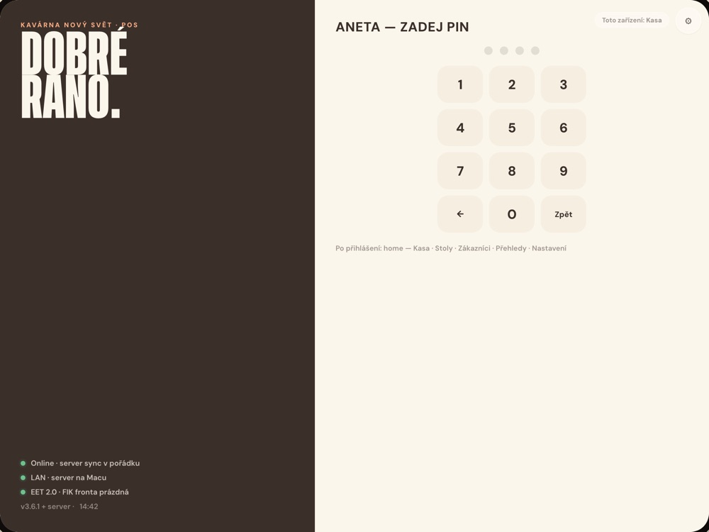
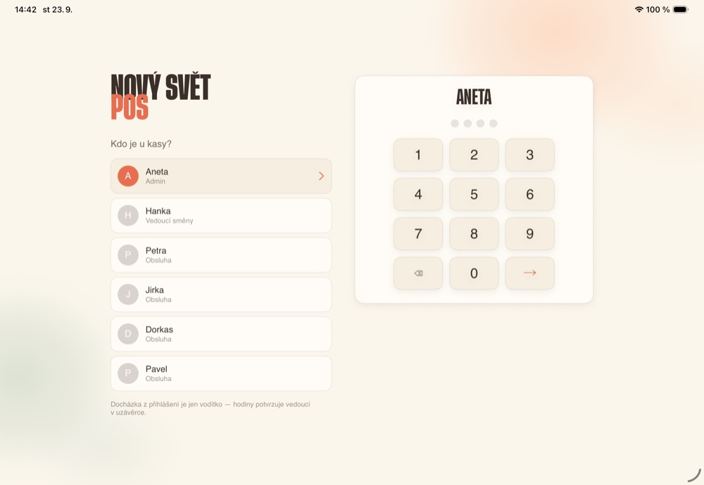
| Prvek | Demo (hodnota) | Swift dnes | Prio |
|---|---|---|---|
| Layout | .hs grid 1fr 1.25fr: vlevo espresso brand panel, vpravo obsah (padding 30/34, gap 18) | Jedna papírová plocha, brand vlevo nahoře malý, lidé 1 sloupec, PIN karta vpravo | P1 |
| Brand panel | bg --espresso, padding 34; overline „KAVÁRNA NOVÝ SVĚT · POS" 11/800 tracking .2em --merunka; pozdrav Tusker 76 px / .95 uppercase („DOBRÉ RÁNO." podle času); dole sysrows 12.5/600 rgba(251,246,236,.75) + tečka 8 px --status-ok s ringem 3 px; verze + čas | chybí (Tusker „NOVÝ SVĚT / POS" ~40 px na papíru) | P1 |
| Nadpis kroku | .hs-main h2 DM Sans 800 uppercase 22 tracking .03em („KDO JE U KASY?" / „ANETA — ZADEJ PIN") | „Kdo je u kasy?" 14 regular; „ANETA" Tusker 22 | P2 |
| Lidé | .hs-people 2 sloupce gap 10; .hs-person min-h 66, bg papir-2, radius 12, padding 12/14; avatar 40 pill, DM Sans 800 17; jméno 15/700, role 11.5/600 opacity .6; vybraný = --terakota + #FFFCF6 | 1 sloupec, řádky ~44 pt, avatar 24, jméno 13, vybraný = merunka tint + šipka | P1 |
| PIN tečky | .pin-dots i 14 px, gap 12, --ink-12 → --espresso | 8 pt tečky, ink-20 | P3 |
| Klávesy | .pinpad 3 × 76 px, gap 10; tlačítko výška 62, radius 18, bg papir-2, DM Sans 800 22; 4. řádek „←" · 0 · „Zpět" | 3 × ~56, výška ~40, radius 8, DM Sans 20 regular; „⌫" · 0 · „→" | P1 |
| Role zařízení | .hs-gear 44 pill glass-fill-60 + blur 8 + edge-soft + elev-1 vpravo nahoře; .hs-rolechip „Toto zařízení: Kasa" 11/700 glass pill | chybí (role v Nastavení) | P2 |
| Washe | žádné na loginu (espresso panel dělá kontrast) | terakota + salvej wash v rozích | P3 nechat jen pokud zůstane jednoplošný layout — doporučuji panel |
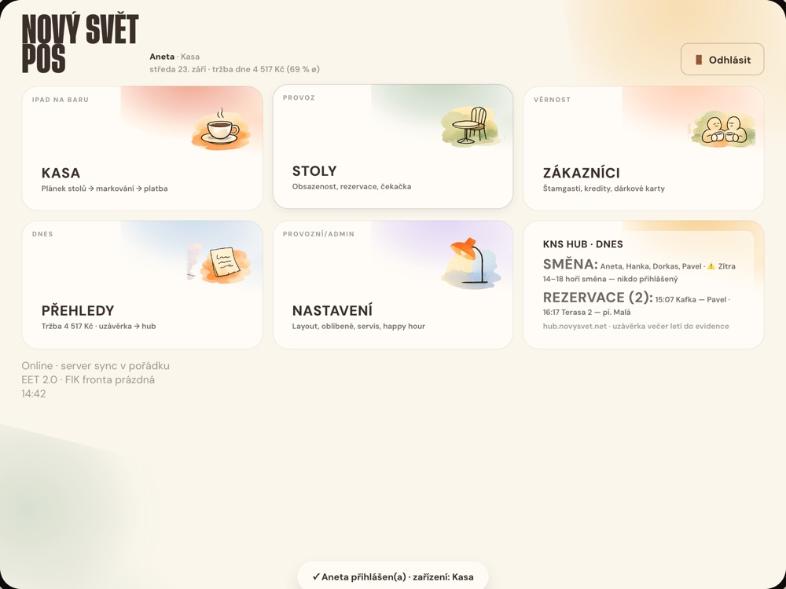
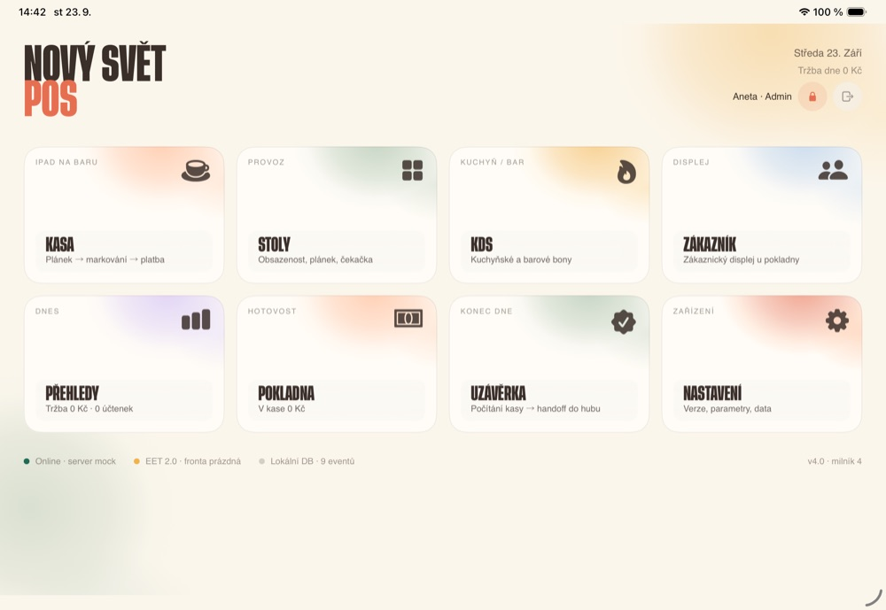
| Prvek | Demo (hodnota) | Swift dnes | Prio |
|---|---|---|---|
| Hlavička | h1 Tusker 46 / .95 uppercase „NOVÝ SVĚT POS" (jediné Tusker na home); vedle .who 12.5/600 ink-45 „Aneta · Kasa / středa 23. září · tržba dne 4 517 Kč (69 % ø)"; vpravo btn „Odhlásit" (btn 48, papir-2, ikona ic-ds) | Tusker ~40 dvouřádkový OK; vpravo datum „Středa 23. Září" (velké Z — chyba), tržba, dvě ikonová tlačítka 44 (zámek, odhlásit) bez labelu | P2 |
| Washe stránky | .mh::before wash-safran 460×380 top −120 right −140 rot −10° op .5; ::after wash-salvej 420×360 bottom −140 left −120 rot 14° op .5 | ano (fáze 1), safran vpravo nahoře + salvej vlevo dole — sedí | P3 |
| Grid dlaždic | 3 sloupce, gap 14; dlaždice min-h 188, radius 24, padding 16, bg card + ring-hairline, obsah zarovnán dolů | 4 sloupce, výška ~150, radius ~20 (8 dlaždic: přibyly KDS, Pokladna, Uzávěrka — víc než demo, v pořádku) | P2 → 4 sloupce nechat, výšku 188, radius 24 |
| Wash v dlaždici | .mh-tile::before top −34 % right −26 % w 85 % h 95 % op .8; wash per dlaždice: Kasa terakota, Stoly salvej, Zákazníci merunka, Přehledy obloha, Nastavení levandule | ano, ale sytější a od vrchu; Kasa má wash terakota z levého rohu | P3 jen doladit pozici/opacitu |
| Ilustrace | .mh-tile .illu 104×104 top 12 right 12, object-fit contain; PNG cup / chair / people-two / receipt-note / lamp | SF Symbol 30 pt v pravém horním rohu | P1 |
| Label na skle | .lbl glass-fill-60 + blur 8, radius 12, padding 10/14, glass-edge-soft; b DM Sans 800 uppercase 21 tracking .03em; small 11.5/600 ink-70 | label na světlé ploše ano; titul Tusker ~20 (má být DM Sans 800) | P2 |
| Overline | .k 10/800 tracking .14em uppercase ink-45, absolutně top 14 left 16 | ano | — |
| Hub karta | 6. dlaždice „KNS HUB · DNES": směna, rezervace, odkaz na hub — data z hubu | chybí (funkční, ne design; M5 sync) | — |
| Hover/press | translateY(−3) + elev-2 .16 s ease-out | nic | P2 → press scale .98 |
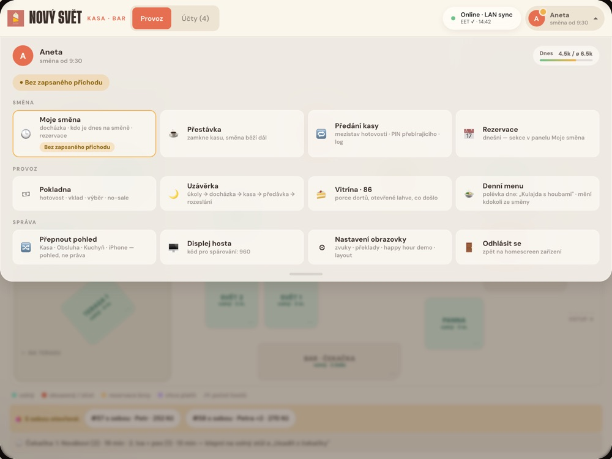
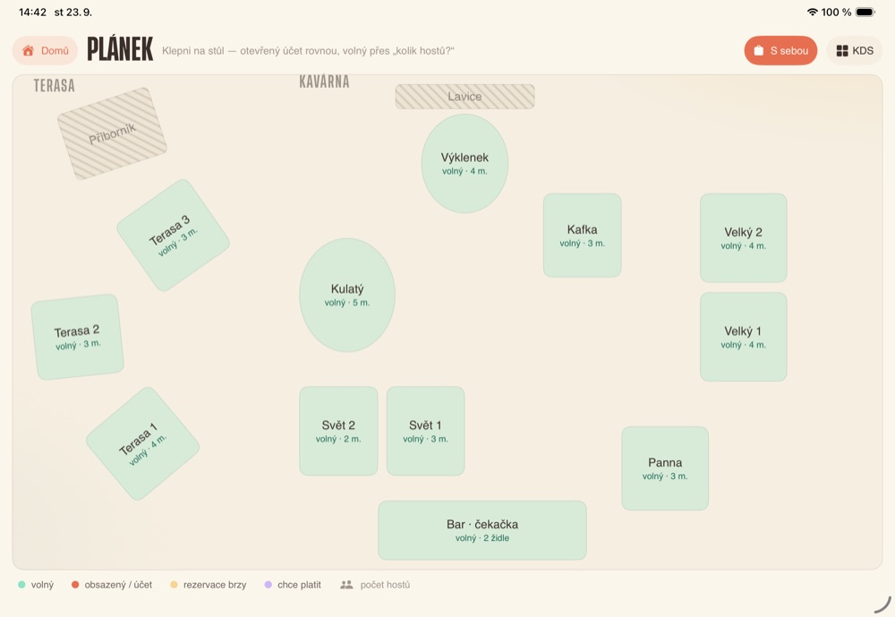
| Prvek | Demo (hodnota) | Swift dnes | Prio |
|---|---|---|---|
| Bar | .topbar padding 12/18, gap 14, bg rgba(251,246,236,.82) + blur 8, hairline dole; min-h prvků 48 | per-obrazovka HStack, bg papír bez blur, hairline ano | P1 |
| 1 · Kontext | na plánku: logo logo-kns-coral.png 44 + „NOVÝ SVĚT" Tusker 26/700 tracking .02em + role „KASA · BAR" 11/700 .14em terakota; na účtu: .tb-back 48 pill papir-2 „←" 19/700 + .tb-name Tusker 22/700 (jediná cesta zpět, .os-back mizí) | „Domů" pill s ikonou + titul obrazovky Tusker ~28; na účtu „< Plánek" pill + KULATÝ Tusker | P1 |
| 2 · Segment | .seg track papir-3 radius 12 padding 4 gap 4; tlačítko radius 8, 600, min-h 40; aktivní terakota + #FFFCF6; „Provoz | Účty (4)" | chybí (Účty = jen historie v Přehledech) | P1 |
| 3 · LivePill | .livepill min-h 44, padding 8/16, pill, glass-fill-80 + blur 16, elev-2 + glass-edge-soft; tečka 8 status-ok; b 12/600; span 10 tabular op .75; event = popIn .24 s ease-pop + tón ok/warn/danger/ink; alarm pulz 1.4 s | chybí; na Home je řádek „Online · server mock · EET 2.0 · Lokální DB" 12 px | P1 |
| 4 · Rukojeť | .tb-handle min-h 48, padding 6 12 6 6, pill, papir-2; avatar 32 terakota DM 800 13; jméno 12.5/600 + small 10.5/500 ink-45; chevron 15 rotate 180° při otevření (.16 s); badge .tb-dot 11 px status-warn/danger s ringem 2.5 px papir-2 | chybí (avatar nikde) | P1 |
| Pull-down sheet | .tb-sheet glass-fill-80 + blur 24, radius 0 0 24 24, padding 16/24/12, gap 16, glass-edge-soft + elev-3; enter translateY(−101 %→0) .22 s ease-sheet cubic-bezier(.3,1.2,.4,1), exit .22 s ease-out; scrim rgba(59,47,42,.4) + blur 3; grip 64×5 ink-12 | chybí | P1 |
| Hlava sheetu | avatar 40 terakota 800 16; jméno 15/800 + „směna od 9:30" 11.5/600 ink-45; vpravo .pulse-chip glass-fill-60 „Dnes 4.5k / ø 6.5k" + bar 4 px gradient ok→safran; alert chipy 8/13 pill 12.5/700 warn-bg/fg („Bez zapsaného příchodu") | — | P1 |
| Dlaždice menu | skupiny SMĚNA / PROVOZ / SPRÁVA (titulek 10/800 .13em ink-45); grid minmax(230,1fr) gap 8; .tbs-tile min-h 56, padding 10/14, radius 12, glass-fill-60 + edge-soft; ikona 26/19 px; b 13.5/700, small 11/600 ink-45 lh 1.35; stav-chip 10.5/800 pill; warn = inset ring 1.5 status-warn | — | P1 |
| Položky | Moje směna · Přestávka · Předání kasy · Rezervace / Pokladna · Uzávěrka · Vitrína · 86 · Denní menu / Přepnout pohled · Displej hosta · Nastavení obrazovky · Odhlásit se | Swift má: Pokladna, Uzávěrka, Nastavení, Odhlásit, Zámek (= Přestávka), Předání (v PinLoginView). Chybí: Moje směna, Rezervace, Vitrína, Denní menu, Displej hosta (funkční, M5+) | — |
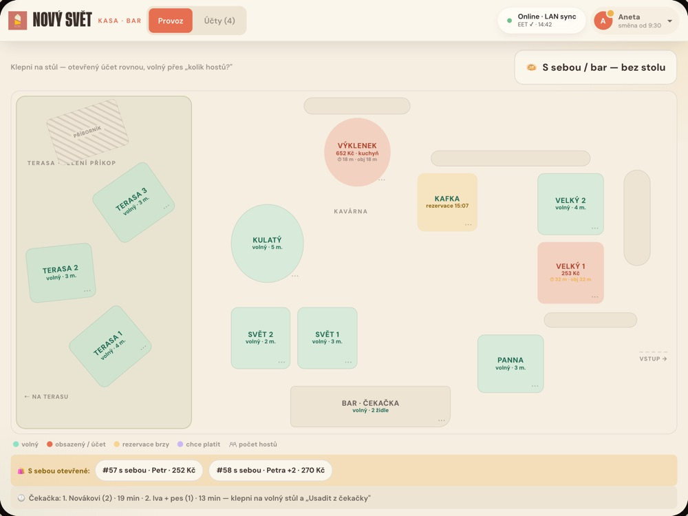
| Prvek | Demo (hodnota) | Swift dnes | Prio |
|---|---|---|---|
| Plátno | .fp papir-2 + hairline, radius 16; zóna Terasa papir-3-ish s labelem 11/800 .14em; washe .fs safran 46×40 % @ 108 %/−6 % op .16 + salvej 42×38 % @ −6 %/108 % | sedí (fáze 1) | — |
| Stůl | .fp-t radius 12, padding 4; název DM Sans 800 uppercase 12.5 tracking .03em v barvě stavu (--state-*-fg); info 9.5/700 ink-45 („volný · 3 m." / „652 Kč · kuchyň" + „⏱ 18 m · obj 18 m"); rohové „…" jako affordance | název mixed-case 14 regular v state-fg; info 10 ok; bez „…" a bez částky/času u obsazeného | P2 |
| Stavy | free: state-free-bg + inset 1 px line-subtle · busy: state-occupied-bg bez ringu · rez: state-reserved-bg · pay: state-wantspay-bg + kns-pulse 1.8 s · sel: ring-selected 2 px terakota · přechod bg .16 s | free/busy/rez/pay ano, statické, bez sel ringu a přechodu | P2 |
| Bar · čekačka | .fp-t.barc papir-3 + ring-default, radius 8/8/20/8, „volný · 2 židle" | zelený jako volný stůl | P3 |
| Legenda | tečky 8 px + 12.5/600 ink-70; 5 položek | ano | — |
| S sebou | velké tlačítko vpravo nahoře „S sebou / bar — bez stolu" card radius 16 ring-hairline 60 pt s ikonou bag; dole pruh status-warn-bg „S sebou otevřené: #57 · Petr · 252 Kč" pill chipy 44; čekačka pruh | btn „S sebou" terakota 44 v hlavičce; pruhy chybí (otevřené účty s sebou nejsou vidět) | P2 |
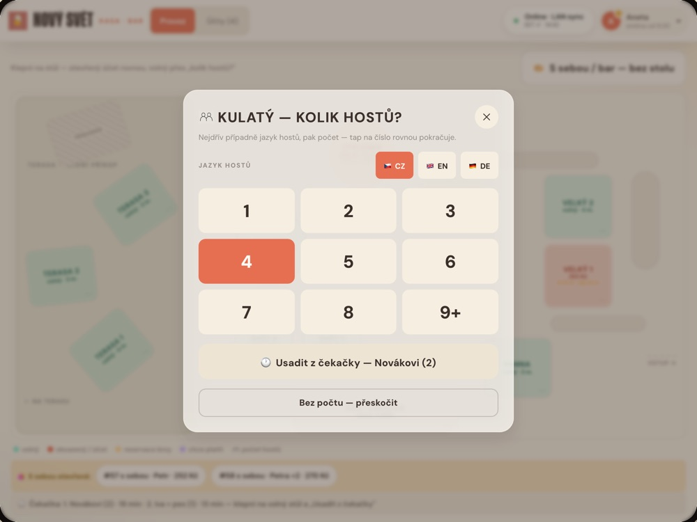
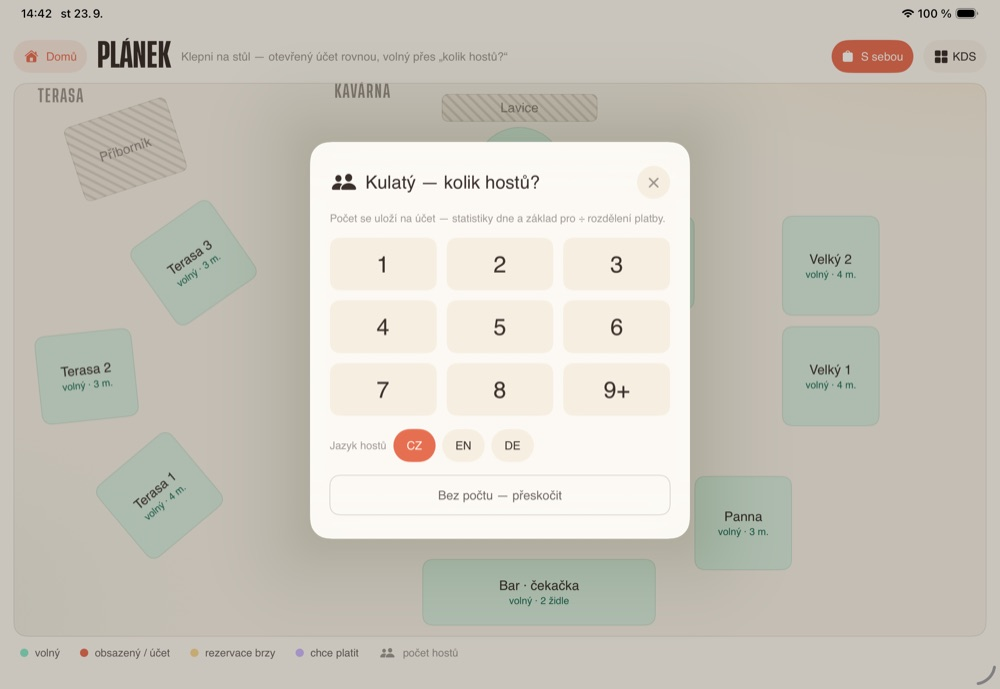
| Prvek | Demo (hodnota) | Swift dnes | Prio |
|---|---|---|---|
| Overlay | scrim rgba(59,47,42,.4) + blur 3; sheet width min(560, 94 %), radius 24, padding 26, gap 16, glass-fill-80 + blur 16, elev-3 | systémový šedý scrim bez blur; sheet ~380 pt, radius 24, glass ✓ | P2 (§4.4) |
| Titulek | ikona guests 26 + DM Sans 800 uppercase 24 tracking .04em „KULATÝ — KOLIK HOSTŮ?"; sub 13 ink-45; x 40 pill papir-2 | ikona SF + 20 regular mixed-case; x 32 | P2 |
| Pořadí | jazyk nejdřív (chipy CZ/EN/DE 44 s vlajkou, aktivní terakota), pak počet | počet nejdřív, jazyk dole (text chipy CZ/EN/DE — OK, vlajky nepoužívat) | P3 pořadí sjednotit s demem |
| Mřížka | .guest-grid 3 sloupce gap 10; tlačítko min-h 76, radius 12, papir-2, DM Sans 800 30; press terakota; „9+" | 3 sloupce, ~56 pt, radius 12, 22 regular | P1 |
| Čekačka | btn „Usadit z čekačky — Novákovi (2)" 60 pt papir-2 (jen když existuje) | chybí (funkční) | — |
| Přeskočit | .btn.ghost 48, inset 1.5 ink-12, 15/700 | ano | — |
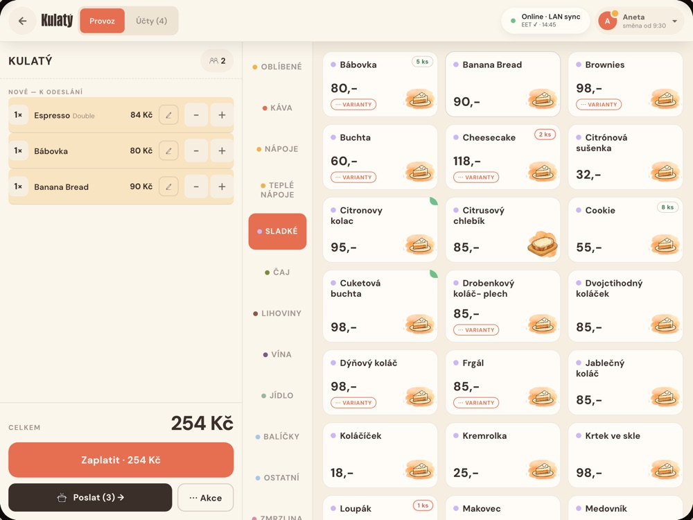
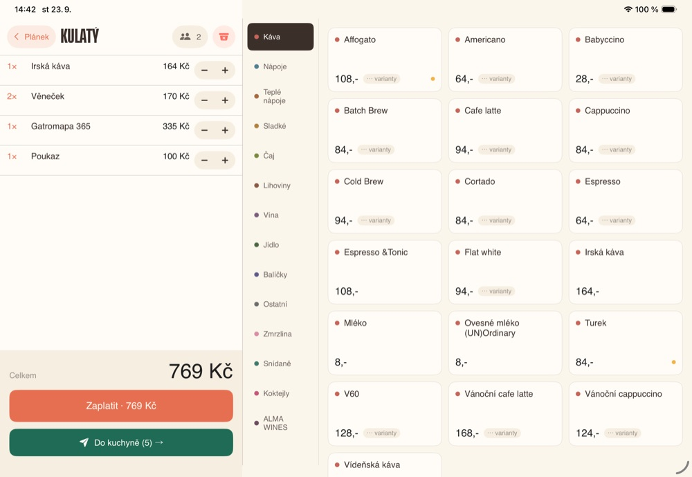
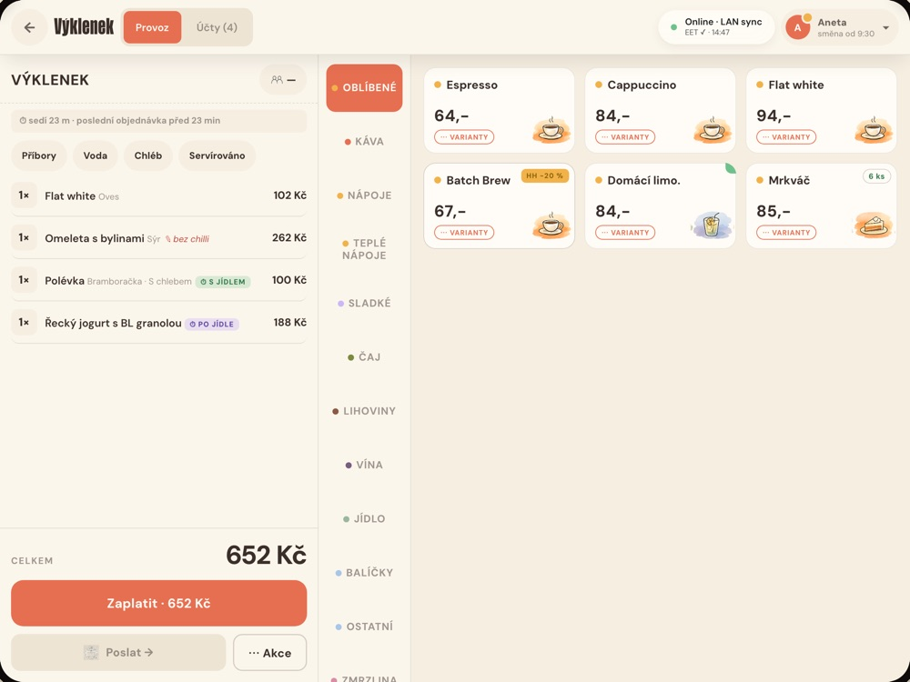
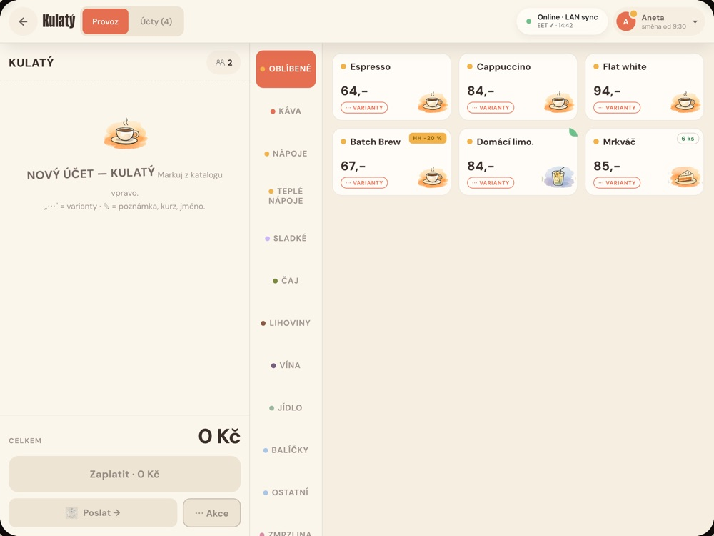
| Prvek | Demo (hodnota) | Swift dnes | Prio |
|---|---|---|---|
| Panely | .os grid minmax(320, 35 %) 1fr; účet bg papír + border-right ink-12; rail .os-cats 118 px; katalog bg papir-2 padding 16 | 35 % ✓, rail 132 (komentář v DesignTokens: čeká na sazbu railu), katalog bg papír (má být papir-2) | P3 |
| Hlavička účtu | .os-title DM Sans 800 uppercase 19 tracking .03em; .os-guests pill 40 papir-2 800 14 s ikonou; dashed hairline dole; na kase bez „← Plánek" (bar má zpět) | „< Plánek" pill + Tusker KULATÝ 26 + guests pill + ikona s sebou | P2 |
| Čas u stolu | .os-times chip „⏱ sedí 23 m · poslední objednávka před 23 min" papir-2 radius 8 11/700; warn = status-warn-bg | chybí | P2 |
| Servisní chipy | .svc-chips Příbory · Voda · Chléb · Servírováno, pill 38, papír + inset 1.5 ink-12, 12.5/700; on = espresso | chybí (funkční, ale levné) | P3 |
| Řádek účtu | .os-row radius 8; pending = status-warn-bg pod nadpisem „NOVÉ — K ODESLÁNÍ" (10.5/800 .12em); qty box „1×" 800; název 700 + varianta ink-45; poznámka koral italic; štítek chodu „S JÍDLEM" ok-bg 9/800; cena 800 tabular; tužka 40 sunken; stepper 40 sunken radius 8 „−/+" 600 18 | řádky bez pozadí, qty terakota, název regular, stepper 32 papir-3; odeslané řádky mají „✓ u baru / v kuchyni" 11 ok — dobré, demo to nemá | P1 |
| Patička | border-top ink-12, padding 12/14/14; „CELKEM" overline + 34/800 tabular; .os-paybtn terakota min-h 62, 18/700, radius 16; řada 1fr auto: „Poslat (3) →" espresso 48 + „⋯ Akce" ghost | Celkem 34 ✓; Zaplatit 56 ✓; „Do kuchyně (5) →" zelená #2E7A4B (má být espresso --surface-inverse, pos.css 1310); Akce chybí | P2 |
| Prázdný stav | .bill-empty ilustrace cup 84 wiggle (steps(1) 1.15 s ±1.7°), „NOVÝ ÚČET — KULATÝ" 19/800 ink-70, hint 13.5 ink-45 | jen text „Nový účet — markuj vpravo" | P1 |
| Rail kategorií | .cat-rail button min-h 62, radius 12, DM Sans 700 uppercase 13.5 tracking .05em ink-45, tečka --cat-* 9 px; aktivní = terakota + #FFFCF6 (pos.css 1300); hover papir-2 | 52 pt, mixed-case 13 medium, aktivní espresso; barvy teček z importu (ne DS mapa Káva terakota / Nápoje safran / Jídlo salvej / Dezerty levandule / Merch obloha) | P2 |
| Dlaždice | .tile card, radius 16, ring-hairline, padding 14/14/12, min-h 96 (grid minmax(148,1fr) gap 12); .nm 15/700 s tile-dot 9; .pr 21/800 tabular „64,–"; .var-chip „⋯ VARIANTY" 9/800 .07em pill inset 1 px terakota + text terakota; .badge-count „6 ks" pill ring-default 11 ok-fg (low = koral); .kds-mark lístek 14 px salvej v rohu; ilustrace 58×58 right 2 bottom 2; dead = opacity .5 + „86"; HH badge safran | card radius 12 ring ✓; název 15 regular; cena 21/700 ✓; „⋯ varianty" šedý chip lowercase; tečka 6 px vpravo dole u položek kuchyně (má být leaf/HH); bez ilustrace; bez počtu | P1 |
| Ilustrace ↔ položka | pos.js 40–61: podle názvu (polévka→soup, croissant, chléb/sendvič→bread, omelet→omelette, granol/jogurt→granola, dort/cheesecake/koláč/buchta→cake, čaj→tea-cup, limo→glass, víno→wine, pivo→beer, zrnk→coffee-beans, espresso tonic) jinak podle kategorie (Káva cup, Nápoje glass, Teplé hot-chocolate, Čaj tea-cup, Sladké cake, Lihoviny spirits, Vína wine-bottle, Jídlo plate-food, Snídaně omelette, Balíčky bag, Ostatní bag-coffee, Zmrzlina icecream, Koktejly cocktail; Oblíbené = domovská kategorie) | — | převzít tabulku 1:1 do MenuItem.illustration |
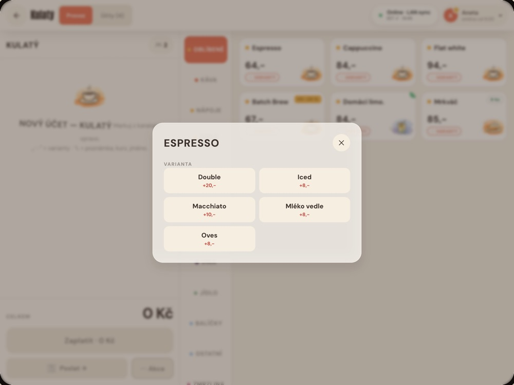
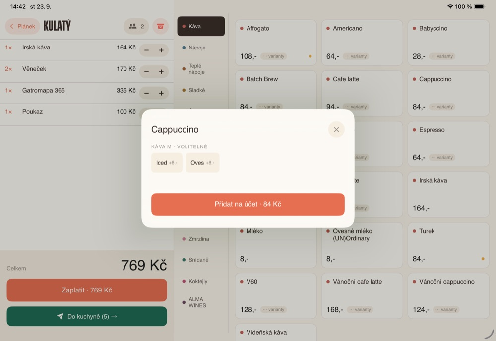
| Prvek | Demo (hodnota) | Swift dnes | Prio |
|---|---|---|---|
| Titulek | DM Sans 800 uppercase 24 „ESPRESSO"; skupina .tp-zone 11/800 .12em ink-45 „VARIANTA · volitelné (max 2)" | 20 regular „Cappuccino"; skupina overline ✓ | P2 |
| Volby | .mp-opts 2 sloupce gap 9; tlačítko papir-2 radius 12, min-h 56, b 15/700 + cena 11.5/700 terakota pod názvem („+20,–"); on = terakota + #FFFCF6 | inline chipy 40 pt „Iced +8,-" 14 regular papir-2 | P1 |
| Fast mode | povinná skupina s 1 volbou → tap = přidat, bez tlačítka; jinak .btn.primary.big 60 „Přidat na účet · 84 Kč" | vždy tlačítko terakota 56 | P3 |
| Poznámka | .mp-note „✎ Sýr, bez chilli…" 13 ink-70 italic — vstup do poznámky kuchyni | chybí | P3 |
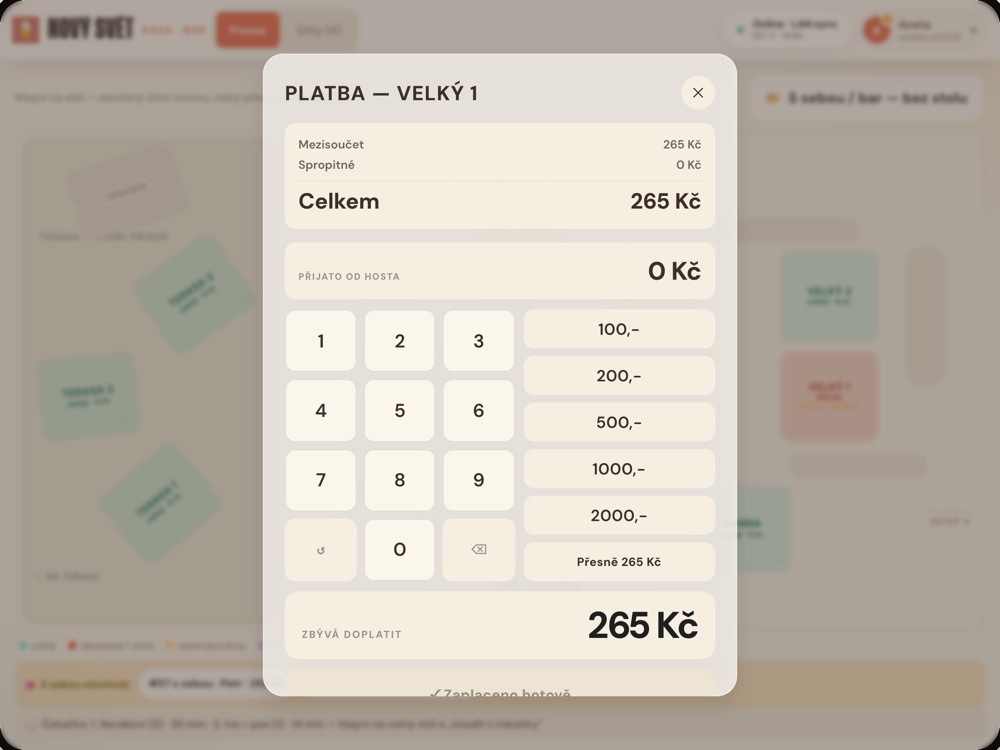
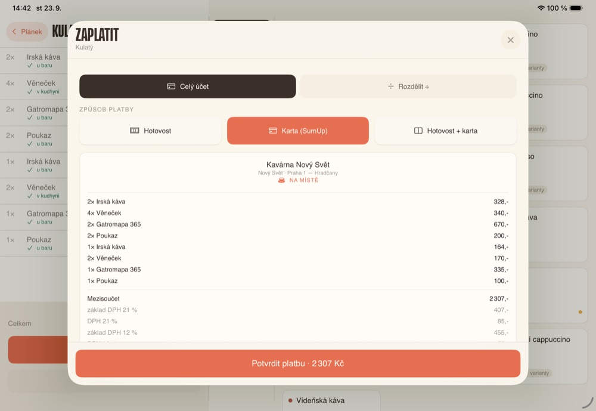
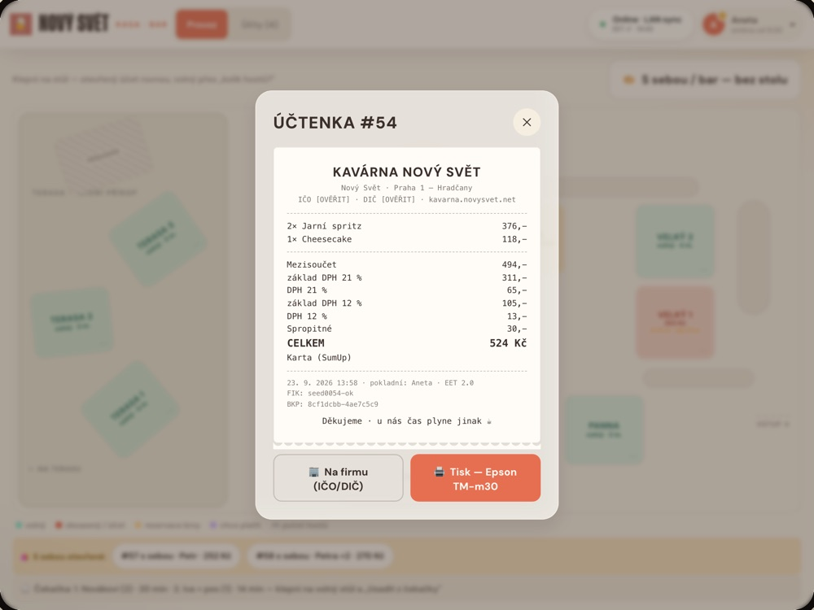
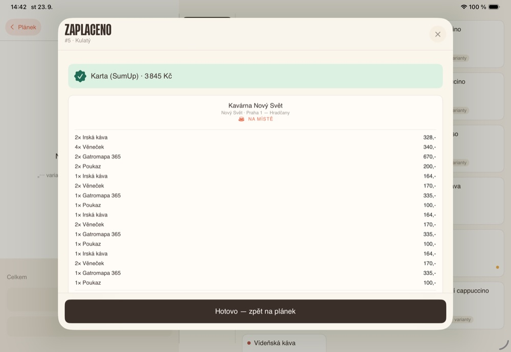
| Prvek | Demo (hodnota) | Swift dnes | Prio |
|---|---|---|---|
| Kontejner | sheet 560 pt (pay) na scrimu; pozadí .os-pay = atmo-merunka.png cover + gradient rgba(251,246,236,.5→.72); obsah max 560 na střed | .page sheet přes většinu iPadu, papír bez atmosféry | P1 |
| Titulek | „PLATBA — VELKÝ 1" DM Sans 800 uppercase 24 + x 40 | „ZAPLATIT" Tusker 28 + sub „Kulatý" | P2 |
| Souhrn | .paysum glass-fill-60 + blur 8, radius 16, edge-soft + elev-1, padding 16; Mezisoučet/Spropitné 14; dashed hr; „Celkem" 24/800 tabular | chybí (rovnou účtenka) | P2 |
| Metody | [data-methods] .btn glass-fill-80 + edge-soft + elev-1, 48; vybraná terakota; Hotovost · Karta (SumUp) · Hotovost + karta · Voucher | 3 tlačítka 44, vybraná terakota ✓, sklo slabší | P3 |
| Přijato | .cash-received papir-2 radius 12 padding 14/16; label 11/800 .1em ink-45; hodnota 30/800 | AmountPad (bez screenshotu) — ověřit velikosti | P1 |
| Numpad | .cash-pad 3 × 56 pt, DM Sans 600 22 tabular, radius 12, card + ring-hairline; „↺ · 0 · ⌫"; rychlé částky 100/200/500/1000/2000 + „Přesně 265 Kč" = .cash-notes 58 pt card + inset 1.5 ink-12, 600 19 tabular | AmountPad — sjednotit s PinPad (§4.7) | P1 |
| Zbývá / Vrátit | .cash-back.due sunken papir-2, radius 16, padding 18/20, label 12/800 .12em, 44/800 tracking −.01em; při přeplatku .cash-back status-ok-bg + ok-fg „VRÁTIT 35 Kč" | ? | P1 |
| Spropitné | .tips TipGrid: 0 · 5 % · 10 % · 15 % · vlastní, pill 44, on = terakota | chybí | P3 (funkční) |
| Rozdělit | segment „Celý účet | Rozdělit" = .seg (terakota aktivní); split rows s pick terakota | segment espresso aktivní, pill | P3 |
| Účtenka | .receipt card radius 6, padding 22/20, SF Mono 12 / 1.55, stín 0 6 22 rgba(59,47,42,.18), zubatý okraj (::after radial 15×10); hlava DM Sans 800 uppercase 19 .05em; dashed hr rgba(59,47,42,.3); CELKEM 800; FIK/BKP; tlačítka „Na firmu (IČO/DIČ)" ghost + „Tisk — Epson TM-m30" terakota | card radius 12 ring, DM Sans 12, bez mono/zubů/stínu; „Hotovo — zpět na plánek" espresso; ok strip „Karta · 3 845 Kč" ✓ (pěkné, nechat) | P2 |
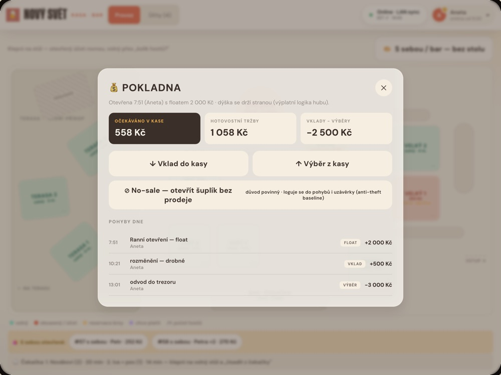
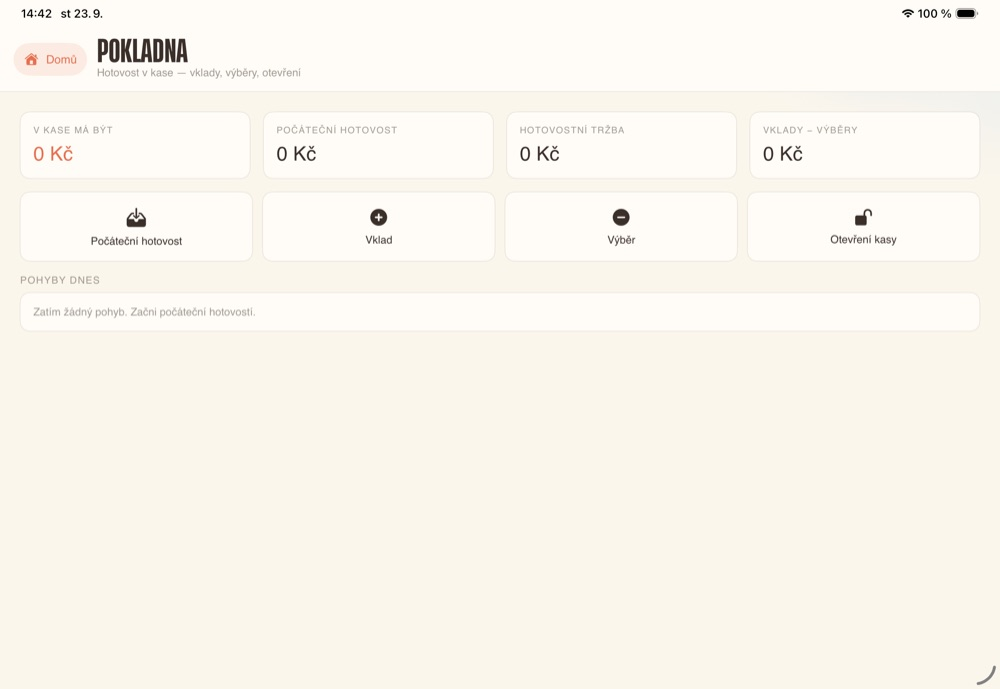
Spec 1:1 v §3.2. Hlavní rozdíly: hero espresso karta „OČEKÁVÁNO V KASE" (label safran, hodnota 26/800 papír) vs. bílá karta s terakota 22 regular; dvě velká tlačítka Vklad/Výběr (btn.big 60, radius 16, šipky) + široký No-sale s vysvětlením vs. 4 ikonové karty; log pohybů s časem · co · kdo · tag · částka vs. prázdný box.
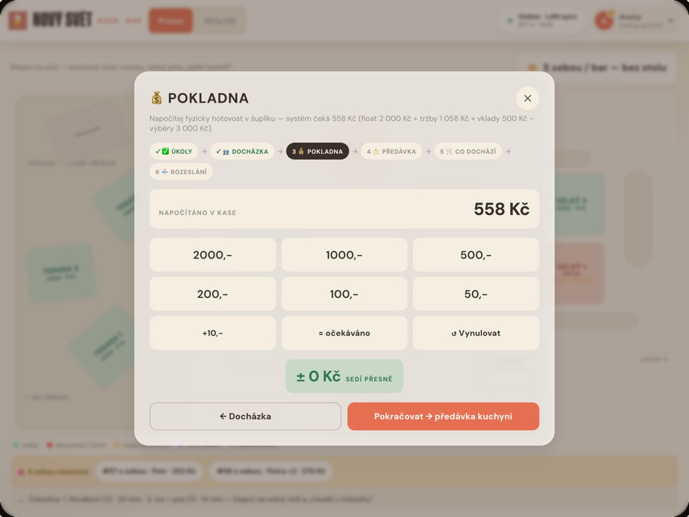
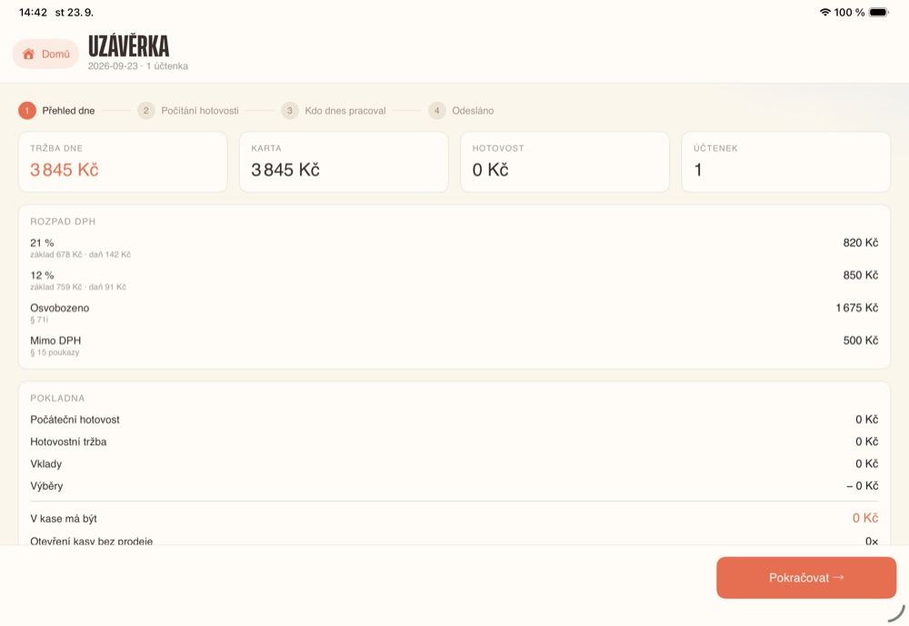
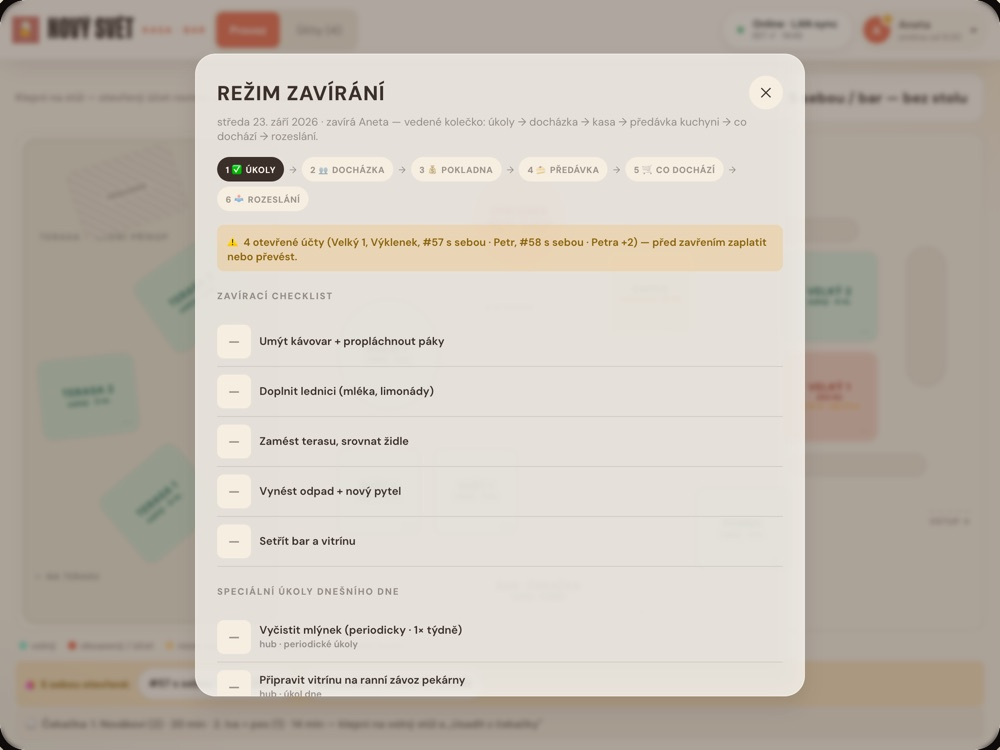
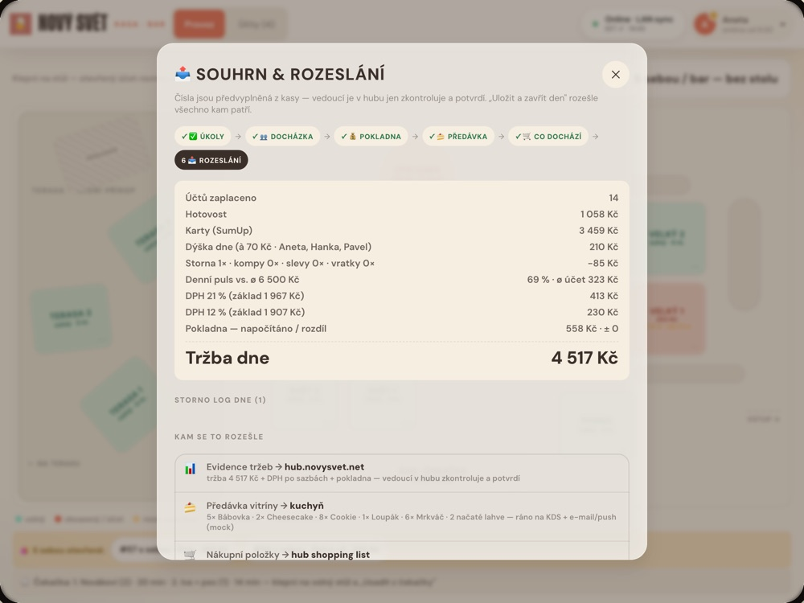
Spec 1:1 v §3.3. Swift má 4 kroky (Přehled · Počítání · Kdo pracoval · Odesláno), demo 6 (Úkoly · Docházka · Pokladna · Předávka · Co dochází · Rozeslání). Vizuálně: chipy kroků, diff-pill, cash-notes, navigace ghost+terakota = přenositelné hned; Úkoly/Předávka/Co dochází potřebují data z hubu (M5) — rozhodnutí v §8.
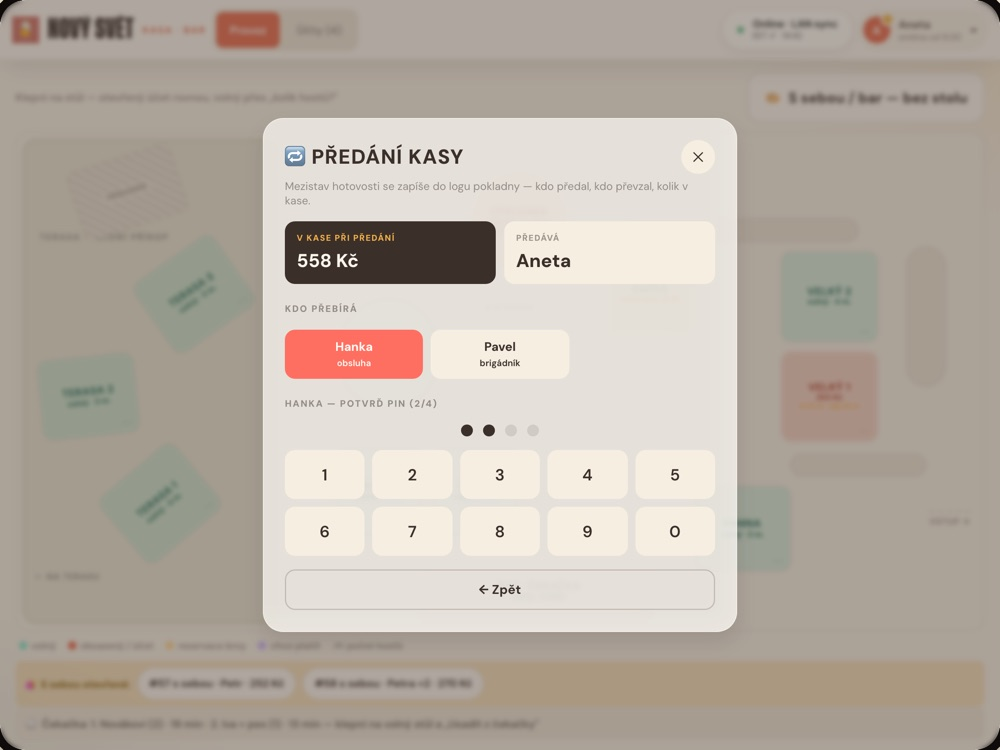
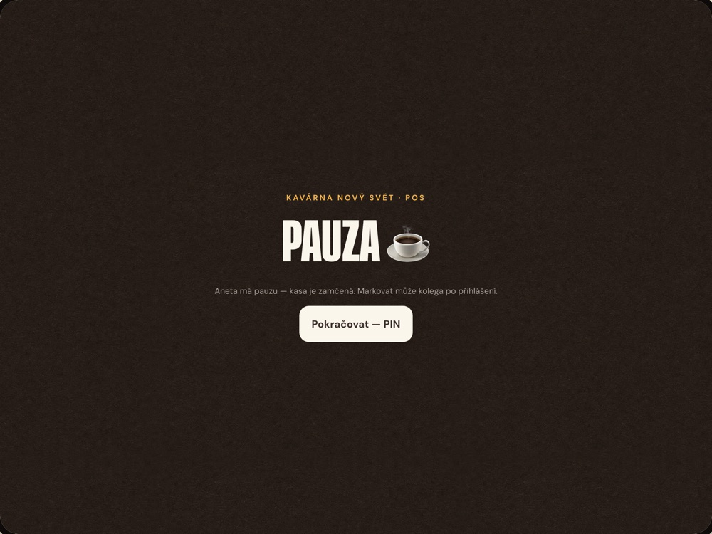
PinLoginView.swift: LockScreenView + předání), ale nejdou vyvolat launch argumentem a kód jsem nesměla měnit — screenshot chybí. Spec 1:1 v §3.4 a §3.5 vychází z dema; Tomáš ať přiloží screenshot po implementaci.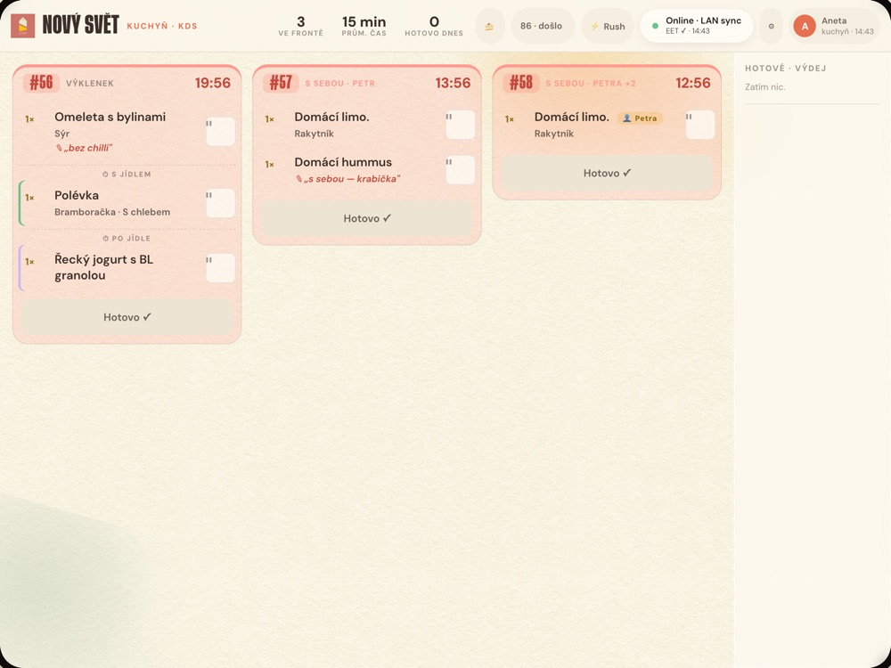
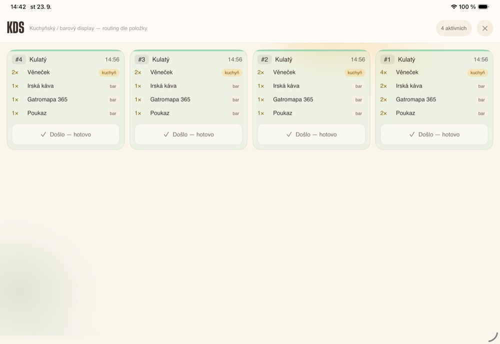
| Prvek | Demo (hodnota) | Swift dnes | Prio |
|---|---|---|---|
| Plocha | papír + paper-grain.png 512×512 tile; washe safran 440×360 (top −120, right 120, op .42, rot −10°) + salvej 400×340 (bottom −140, left −110, op .42, rot 16°); grid .kds-main 1fr 208 px | papír bez zrna, salvej wash vlevo dole slabě; bez bočního panelu | P2 |
| Bar | brand + „KUCHYŇ · KDS"; statistiky 3 VE FRONTĚ · 15 min PRŮM. ČAS · 0 HOTOVO DNES (20/800 + overline 9.5/800 .1em); chipy „86 · došlo", „⚡ Rush"; LivePill; gear; avatar „Aneta · kuchyň · 14:43" | „KDS" Tusker + sub; chip „4 aktivních"; x | P1 |
| Bon | .ticket radius 16, bg podle stáří rgba(155,217,180,.16) / (245,206,134,.2) / (255,154,144,.22) + inset 0 4 px 0 0 kds-color + ring-hairline; prahy ≥ 5 min safran, ≥ 10 min korál; late = kns-alarm ring 5 px koral .24 1.4 s | radius 12 card + zelený proužek 3 px nahoře; všechny čerstvé → nelze ověřit tón; bez alarmu | P2 |
| Hlava bonu | padding 12/14/8; číslo Tusker 19/700 pill padding 2/9/1 bg ink-08 (late: danger-bg/fg); „VÝKLENEK" 11/800 .08em ink-45; čas 17/800 tabular vpravo (warn safran-fg, late koral) | „#4" pill 13 DM, „Kulatý" 14, čas 12 regular | P1 |
| Položka | qty 13/800 safran-fg min-w 30; název DM Sans 800 20 / 1.12; mods 12.5/600 ink-70; poznámka „✎ „bez chilli"" 12.5 italic koral; checkbox 44 card vpravo; hotovo = přeškrtnutí 3 px + opacity .38 | qty 13 safran, název 14 regular, stanice chip vpravo (kuchyň safran-bg / bar), bez checkboxu | P1 (čitelnost z 1,5 m) |
| Chody | dashed oddělovač + „⏱ S JÍDLEM" / „⏱ PO JÍDLE" overline; levá svislá linka 3 px status-ok / levandule u odloženého chodu | chybí (datový model chodů — mimo design) | — |
| Bump | .bump světlý: rgba(255,252,246,.75) + hairline, radius 13, min-h 52, margin 0 10 12, „Hotovo ✓" 15/700; ready = status-ok-bg + pulz 1.4 s „Zavřít bon" 16.5 | „✓ Došlo — hotovo" ghost 44 | P2 |
| Boční panel | .kds-side 208 px border-left, „HOTOVÉ · VÝDEJ" 11/800 .13em ink-45, done-card card radius 12 s entrance | chybí | P2 |
| Prázdný stav | ilustrace soup 110 wiggle + „Fronta prázdná" 19/800 | ? | P2 |
| Tmavá varianta | KDS v noci: .device.dark night-2 + paper-grain-dark; přepínač v gearu | chybí | P3 fáze 3 |
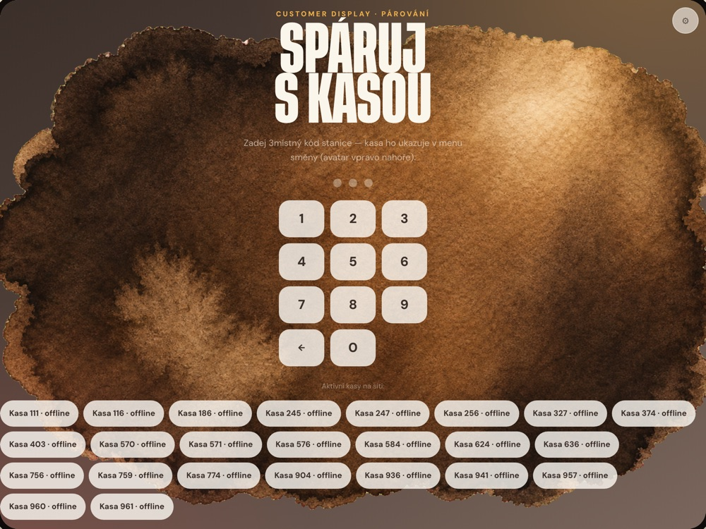
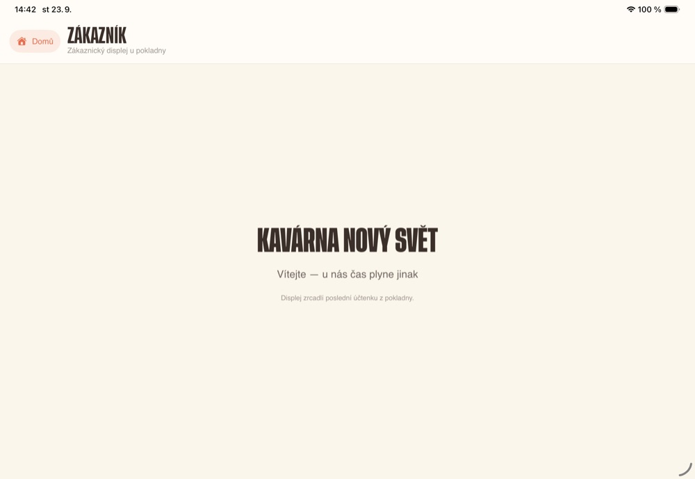
| Prvek | Demo (hodnota) | Swift dnes | Prio |
|---|---|---|---|
| Plocha | .cd bg atmo-espresso.png cover (1536×1024) + fallback gradient --atmo-espresso; text papír | papír, hlavička „Domů · ZÁKAZNÍK" | P1 |
| Idle | ilustrace hero-cafe-cut 190 (alpha cutout na washi) + h1 Tusker 88/.95 „KAVÁRNA NOVÝ SVĚT" + p 15 rgba(251,246,236,.6) | Tusker 44 espresso + 2 řádky | P1 |
| Párování | overline „CUSTOMER DISPLAY · PÁROVÁNÍ" merunka .2em; tečky; numpad glass-fill-10 + blur 8, klávesy 56 radius 12; seznam stanic pill glass | chybí (M5 sync) | — |
| Účet | .cd-bill grid 1.35fr 1fr; položky 18; celkem 72/800 (money-hero); nová položka glassIn; díky: Tusker 74 „DĚKUJEME" | zrcadlí poslední účtenku (jiný koncept) | rozhodnutí §8 |
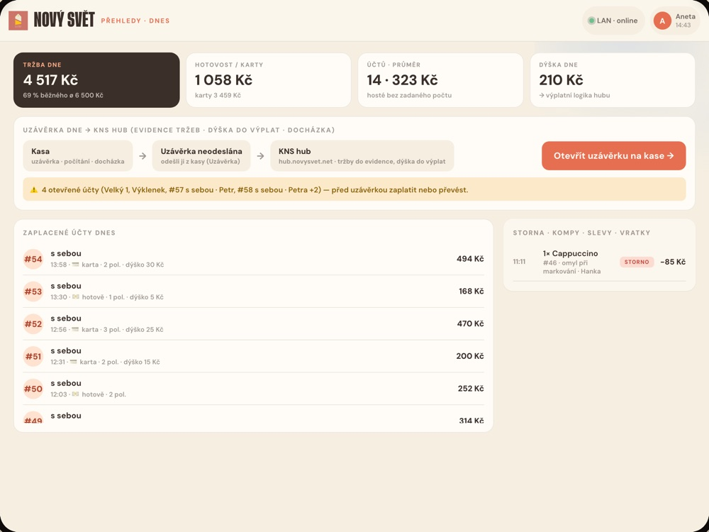
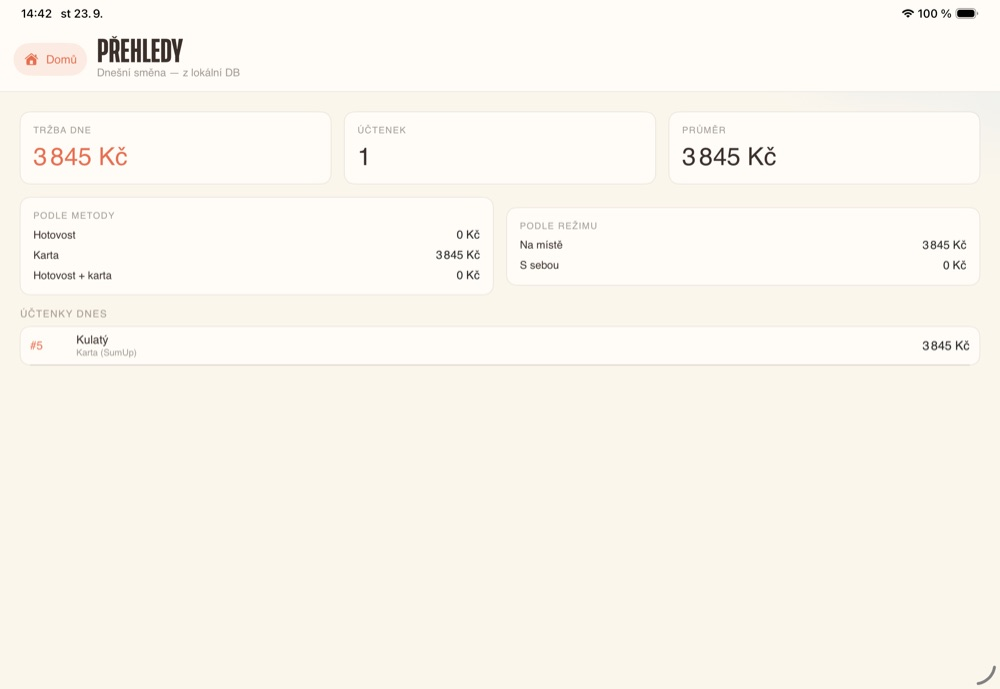
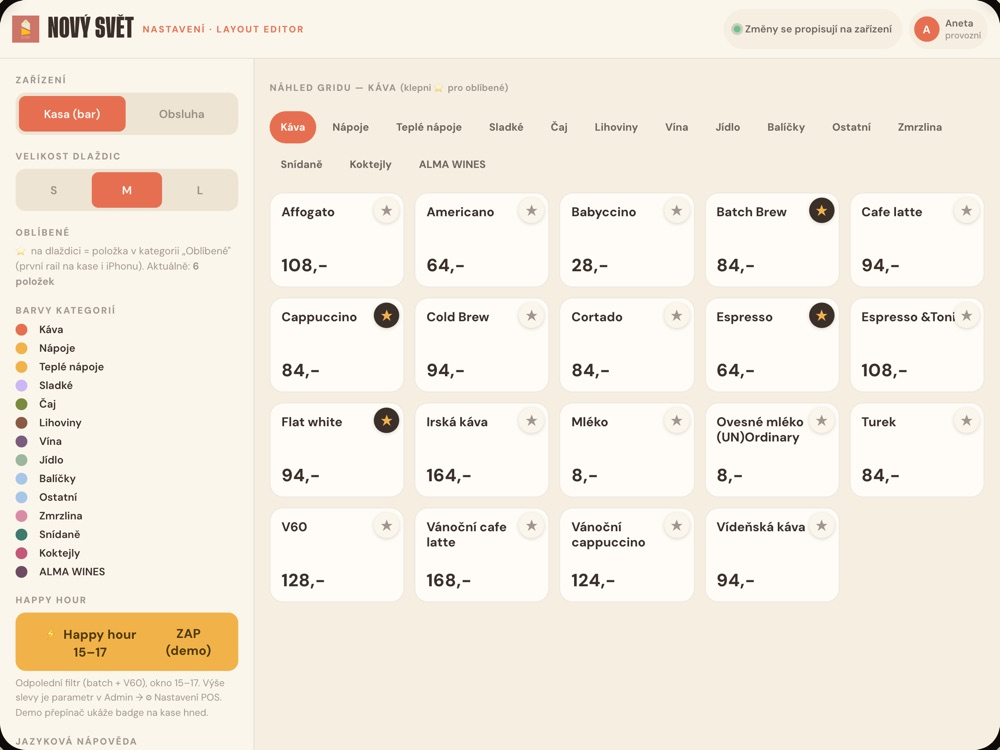
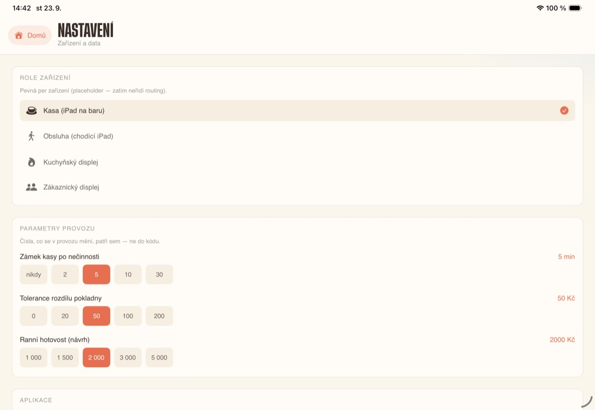
| Prvek | Demo (hodnota) | Swift dnes | Prio |
|---|---|---|---|
| Plocha sekce | .sec-wrap papir-2, padding 18/22/24; wash obloha 420×340 top −110 right −130 op .4 | papír, bez washe | P3 |
| Stat karty | .sec-card card radius 16 padding 14/16 ring-hairline; l 10/800 .11em; v 24/800 tabular; d 11/600 ink-45; hero = espresso + label merunka (Tržba dne) | karty ✓; hodnota 26 regular terakota; bez hero | P2 |
| Uzávěrka flow | pruh 3 kroků (Kasa → Uzávěrka neodeslána → KNS hub) + CTA terakota „Otevřít uzávěrku na kase →" + warn strip otevřených účtů | chybí | P3 |
| Seznam účtů | .acct-row papir-2 radius 12 padding 11/14; číslo v pill 32 terakota-bg; tt 14.5/800; sub 11.5/600; amt 17/800 | řádek card, „#5" terakota, 14/12 | P3 |
| Nastavení | DS: seg (radius 12/8, aktivní terakota), overline 10/800 .11em, karty ring-hairline; happy hour = safran karta | chipy 44 pt terakota aktivní ✓, overline ✓, karty ✓ — vizuálně nejblíž demu ze všech obrazovek | — |
Rozměry jsou v pt (= px dema). Sheety se otevírají z pull-down menu nad plánkem přes DSOverlay. Pokud Tomáš zatím nechá routy z Home, obsah sheetu stejně sedí do max-width 560/720 na střed obrazovky.
HStack(spacing: 0)
├─ BrandPanel width = 1/2.25 šířky (grid 1fr 1.25fr → 44 %) bg espresso, padding 34
│ ├─ Overline „KAVÁRNA NOVÝ SVĚT · POS" DM 11/800 tracking .2em color merunka
│ ├─ Hero Tusker 4700Bold 76 pt / lineHeight .95, uppercase, 2 řádky
│ │ text podle hodiny: <10 „DOBRÉ RÁNO." · <17 „DOBRÝ DEN." · jinak „DOBRÝ VEČER."
│ ├─ Spacer
│ ├─ SysRows 3× (dot 8 status-ok + ring 3 rgba(62,97,82,.3)) + DM 12.5/600 rgba(251,246,236,.75)
│ └─ „v4.0 · milník 4 · 14:42" DM 12 rgba(251,246,236,.45)
└─ Main padding 30/34, VStack gap 18
├─ TopRight: RoleChip „Toto zařízení: Kasa" (glass-fill-60 pill 11/700 ink-45) + GearButton 44 glass
├─ H2 DM 800 uppercase 22 tracking .03em („KDO JE U KASY?" → „ANETA — ZADEJ PIN")
├─ krok who: LazyVGrid 2 sloupce gap 10 · PersonRow min-h 66 papir-2 r12 padding 12/14
│ avatar 40 pill (barva podle role: vedoucí terakota, obsluha salvej, kuchyň safran) DM 800 17
│ jméno 15/700 · role 11.5/600 opacity .6 · vybraný = terakota fill + #FFFCF6
└─ krok pin: PinDots 4× 14 pt gap 12 (ink-12 → espresso, popIn steps(3) při zadání)
PinPad 3 sloupce × 76, gap 10, klávesa h 62 r 18 papir-2, DM 800 22
řádek 4: „←" (smazat) · „0" · „Zpět" (DM 700 15)
špatný PIN: kns-stamp shake? NE — demo: toast „✕ Špatný PIN" + tečky zpět; ve Swiftu tečky koral 300 ms + reset
DSSheet(width: 720) glass-fill-80 + blur 16, r 24, padding 26, gap 16 ├─ Head: ic-ds cash 26 + „POKLADNA" DM 800 uppercase 24 .04em · X 40 pill papir-2 ├─ Sub DM 13 ink-45: „Otevřena 7:51 (Aneta) s floatem 2 000 Kč · dýška se drží stranou." ├─ StatRow 3 sloupce gap 10 · StatTile papir-2 r 12 padding 13/14 │ l 10/800 .1em ink-45 · v DM 800 26 tabular (demo .dc .v 22 → v3 render 26) │ [hero] „OČEKÁVÁNO V KASE" bg espresso, l color safran, v papír │ „HOTOVOSTNÍ TRŽBY" · „VKLADY − VÝBĚRY" (záporné = minus, ne barva) ├─ Actions 2 sloupce gap 10 · Button.big 60 r 16 papir-2 DM 17/700 │ „↓ Vklad do kasy" „↑ Výběr z kasy" (výběr jen vedoucí+ → disabled .35 s hintem) ├─ NoSale 1 řádek 100 % 60: vlevo „⊘ No-sale — otevřít šuplík bez prodeje" 17/700, vpravo hint 12.5/600 ink-70 ├─ Overline „POHYBY DNE" 11/800 .12em ink-45 └─ Log ListRow 9/0 border-bottom ink-12: čas 11.5/700 ink-45 w 40 · co 13/600 + kdo 11 ink-45 · tag 9/800 pill papir-2 (FLOAT/VKLAD/VÝBĚR/NO-SALE/PŘEDÁNÍ) · částka 800 tabular („+2 000 Kč" / „−3 000 Kč") prázdné: EmptyState(ilustrace receipt-note 84, „Zatím žádný pohyb", hint „Začni počáteční hotovostí.") Sub-sheety Vklad/Výběr: cash-received (30/800) + cash-pad + reason-grid (2 sloupce 58 r 12, on = koral) + „Důvod (povinný)" tp-zone
Head „REŽIM ZAVÍRÁNÍ" 24/800 + X · sub 13 ink-45 (datum · zavírá Aneta — vedené kolečko: úkoly → docházka → kasa → …)
StepChips wrap, gap 6, šipky „→" ink-45 mezi
chip pill h 30 padding 6/11, DM 11/800 uppercase .06em
hotovo = status-ok-bg + ok-fg + „✓" · aktivní = espresso fill + papír · další = papir-2 + ink-70
WarnStrip status-warn-bg r 8 padding 10/13 12.5/700 („⚠ 4 otevřené účty (…) — před zavřením zaplatit nebo převést.")
Krok 1 Úkoly: Checklist row h 60 border-bottom ink-12 · checkbox 36 papir-2 r 8 → status-ok-bg + ✓ · label 15/600
Krok 2 Docházka: DochRow (jméno, přišel/odešel time inputs 40, ✓ chip ok-bg)
Krok 3 Pokladna: Card papir-2 r 12 padding 16: „NAPOČÍTÁNO V KASE" overline vlevo, 30/800 vpravo
CashNotes 3 sloupce gap 9, h 58 r 12 card + inset 1.5 ink-12, DM 600 19 tabular (2000 · 1000 · 500 / 200 · 100 · 50 / +10 · = očekáváno · ↺ Vynulovat — alt 14/700)
DiffPill na střed, pill, padding 12/24: „± 0 Kč" 24/800 + „SEDÍ PŘESNĚ" 11/800 .1em
tón: |diff| ≤ tolerance → status-ok-bg/fg · jinak status-danger-bg/fg „CHYBÍ 120 Kč" / warn „PŘEBÝVÁ 40 Kč"
Krok 4 Předávka / 5 Co dochází: seznam řádků se stepperem (data hub, M5)
Krok 6 Souhrn: SummaryCard papir-2 r 12: řádky 14/600 (label ink-70, hodnota 800 tabular), poslední „Tržba dne" 24/800; „KAM SE TO ROZEŠLE" list card r 12 s ikonou + b + small
Nav grid 1fr 1fr gap 10: ghost „← Docházka" · terakota „Pokračovat → předávka kuchyni" (Button.big 60 r 16); poslední krok: „Uložit a zavřít den" espresso
Přechod kroků: kns-fadeUp .24 s ease-out (jen obsah pod chipy)
Head „PŘEDÁNÍ KASY" (ic-ds undo/handoff nebo SF arrow.triangle.2.circlepath) + X Sub 13 ink-45 „Mezistav hotovosti se zapíše do logu pokladny — kdo předal, kdo převzal, kolik v kase." StatRow 2 sloupce: hero „V KASE PŘI PŘEDÁNÍ 558 Kč" · „PŘEDÁVÁ Aneta" Overline „KDO PŘEBÍRÁ" · ReasonGrid 3 sloupce gap 9, h 58 r 12 papir-2, jméno 14.5/700 + role 10.5/600; on = koral #FF6F61 + #FFFCF6 (ne terakota — DS reason-grid) → po výběru: Overline „HANKA — POTVRĎ PIN (2/4)" · PinDots 14 · NumRow 5 sloupců 1–9,0 h 58 (cash-notes styl) „← Zpět" ghost 48 → zpět do pull-down menu (ne zavřít) Úspěch: toast glass „✓ Kasa předána — Hanka (558 Kč v kase, v logu)" + relogin jako Hanka
ZStack: bg espresso + paper-grain-dark.png tile 512 (opacity 1, je v PNG) VStack center gap 16: Overline „KAVÁRNA NOVÝ SVĚT · POS" 11/800 .2em safran HStack: „PAUZA" Tusker 72/700 papír + ilustrace cup 72 (wiggle) p 14 rgba(251,246,236,.6) „Aneta má pauzu — kasa je zamčená. Markovat může kolega po přihlášení." Button „Pokračovat — PIN" card fill #FFFCF6 espresso text, 60 r 16, 17/700 Auto-lock po nečinnosti (Nastavení 5 min) = stejná obrazovka, text „Kasa zamčená po nečinnosti".
Jedna složka Sources/DS/, každá komponenta = jeden soubor + náhled. Hodnoty odkazují na demo/DS zdroj. Pravidlo z DS: komponenty jsou flat (fill + hairline), stín má jen to, co plave (sheet, toast, LivePill, float). Hloubka se dělá vrstvením papír → wash → obsah → sklo.
.ultraThinMaterial + overlay rgba(251,246,236,.82), hairline dole; obsah scrolluje pod ní (safeAreaInset)logo-kns-coral) + Tusker 26/700 „NOVÝ SVĚT" + role 11/700 .14em terakota.regularMaterial, blur 24, r 0/0/24/24, padding 16/24/12, elev-3 + edge-soft; offset −101 %→0 .spring(response:.22, dampingFraction:.72) (≈ ease-sheet overshoot), zavření .timingCurve(.3,1,.4,1, duration:.22).sheet(): scrim rgba(59,47,42,.4) + blur 3 (.background(.ultraThinMaterial) + Color overlay), tap = close, Esc/klávesnice.regularMaterial + fill), elev-3 (radius 12, y 12, .12) + edge-softpaper-grain.png tile 512 pt (Image.resizable(resizingMode:.tile) v 0.5 scale) na page pozadí (KDS, home, sekce), nikdy na kartách.system(size:12, design:.monospaced) lh 1.55, shadow (radius 11, y 6, .18), zubatý spodní okraj (Canvas: kruhy 15×10)| Token | Demo | SwiftUI |
|---|---|---|
| dur-press | .1 s, scale .98 | ButtonStyle: .scaleEffect(isPressed ? 0.98 : 1).animation(.easeOut(duration:0.1)) |
| ease-out | cubic-bezier(.3,1,.4,1) | .timingCurve(0.3,1,0.4,1, duration: d) |
| ease-pop | (.3,1.4,.4,1) overshoot | .spring(response:0.24, dampingFraction:0.6) |
| ease-sheet | (.3,1.2,.4,1), .22 s | .spring(response:0.22, dampingFraction:0.72) |
| steps(3) / steps(2) / frame 90 ms | stop-motion (popIn, stamp, toast, wiggle) | iOS 17: PhaseAnimator s .linear(duration:0) mezi fázemi + Task.sleep(90 ms); iOS 16 fallback: Timer/Task přepínající 3 stavy bez implicitní animace (.animation(nil)). Nikdy plynulé — v tom je ta hlína. |
| kns-popIn | .92/0 → 1.03 → 1/1 | jen na nově přidaném řádku (id == lastAdded), ne při každém překreslení |
| kns-stamp | .82 rot −1.5° → 1.06 rot .8° → 1, .32 s steps(3) | potvrzení: zaplaceno-ring, předání OK, bump |
| kns-sheetUp / glassIn / fadeUp | y 24/12/8 + opacity, .22/.24 s | .transition(.offset(y:24).combined(with:.opacity)) + ease-sheet |
| kns-wiggle | 2 fáze ±1.7°, 1.15 s (empty) / 2.6 s (titul) | Timer 575 ms toggle rotationEffect, anchor (.5,.88); off při Reduce Motion |
| pulse-slow / alarm | 1.8 s / 1.4 s opacity .5 / ring 5 px | .animation(.easeInOut(duration:0.9).repeatForever(autoreverses:true)); Reduce Motion = statický ring |
| Zásada | Feedback až po akci, ≤ 400 ms, nikdy neblokuje další tap. Pozadí (washe, papír) se nehýbe. Jediné smyčky = alarmy + idle wiggle. @Environment(\.accessibilityReduceMotion) respektovat všude. | |
DMSans-Variable.ttf (osy opsz 9–40, wght 100–1000); CoreText ho registruje jako DMSans-9ptRegular_* (ověřeno probe: DMSans-Bold → DMSans-9ptRegular_Bold). Demo v prohlížeči používá font-optical-sizing:auto → 14–24 px text jede v opsz 14–24 (užší, pevnější). Proto Swift působí „vzdušněji a širší". Cesta: přibalit statické DMSans_18pt-Regular/Medium/SemiBold/Bold.ttf (DS má 3 ze 4 v assets/fonts, SemiBold doplnit z Google Fonts repa; OFL) a v DS.dm() volat je; peníze ≥ 30 pt ideálně 24pt instance. Alternativa: variable font + kCTFontVariationAttribute opsz = velikost — víc kódu, stejný výsledek.| Role | Demo | Swift dnes → má být |
|---|---|---|
| Hero | Tusker 4700 Bold: login 76, displej 88/74, pauza 72, home h1 46, brand v baru 26, KDS číslo bonu 19 (jediné malé Tusker) | Tusker na 22 místech vč. titulků Zaplatit/Pokladna/Uzávěrka/Přehledy/KDS/KULATÝ → jen hero list; tusker() nechat jen v těchto místech |
| Titulek sheetu / obrazovky | DM Sans 800 uppercase 24 (sheet) / 22 (sekce) / 19 (účet) tracking .03–.04em | 20 regular mixed → 800 uppercase + .kerning |
| Overline | 10–11 px 800 tracking .1–.14em uppercase ink-45 | ✓ velikost, doplnit váhu 800 a tracking .12em |
| Body / meta | 15/700 názvy, 13–14 text, 11–12.5/600 meta ink-45 | názvy regular → 700; meta ok |
| Peníze | DM Sans 800 tabular: 21 dlaždice · 24 karty · 30 přijato · 34 celkem · 44 vrátit · 72 displej | DS.money() = Bold + monospacedDigit ✓ → přidat stupnici jako enum |
| Mono | SF Mono 12 (účtenka, FIK) | .system(design:.monospaced) — bez assetu |
iPady jsou všechny @2x (Pro 2018, Air 3, Air 4) — @3x není potřeba, do xcassets jde jedna 2× varianta. Zdroje: KNS_DesignSystem/assets/illustrations (37 PNG s alfou, 15 MB) a KNS_POS_Demo/public/assets/ds (atmosféry 15 MB, textury 3.5 MB, ikony 308 KB, logo).
| Skupina | Soubory | Použití (pt) | Export | Poznámka |
|---|---|---|---|---|
| Ilustrace home | cup 316×227 · chair 292×205 · people-two 324×202 · receipt-note 285×196 · lamp 260×227 (+ pro nové dlaždice: soup = KDS, coffee-beans = Pokladna, prague-skyline nebo hero-layers = Uzávěrka) | 104 | @2x = 208 px výška; zdroje ~200 px → stačí, ale hrana měkká — ideálně re-export z Jakubova zdroje 2× (ASSETS-BRIEF.md) | PNG alfa, renderingMode(.original) |
| Ilustrace katalog | cup · glass · hot-chocolate · tea-cup · cake · spirits · wine-bottle · plate-food · omelette · bag · bag-coffee · icecream · cocktail · soup · croissant · bread · granola · teapot · wine · beer · coffee-beans · espresso-tonic (22) | 58 (S: 42) | @2x 116 px; 1024² zdroje → downscale na 256, _web 512 verze stačí | mapa položka→ilustrace v §2.6; ve Swiftu tabulka v MenuItem |
| Ilustrace stavy | cup (účet) · soup (KDS) · hand-wave (displej díky) · hero-cafe-cut 282×176 (displej idle) · person-thinking · person-sofa · plant | 84–190 | hero-cafe-cut na 190 pt = 380 px → zdroj 282 px je malý (1.35×) — chce re-export nebo dovolit 140 pt | wiggle jen na empty states |
| Atmosféry | atmo-espresso (displej, 2.4 MB) · atmo-merunka (platba, 2.2 MB); zbylých 5 zatím ne | cover celé obrazovky | 1536×1024 PNG → HEIC/JPEG q .85 ~250 KB (bez alfy), do xcassets jako Data/Image | + fallback gradient --atmo-* (už v DS) |
| Textury | paper-grain (1024², 1.6 MB) · paper-grain-dark (1.6 MB) · edge-wash 2048×512 (444 KB, zatím nepoužito) | tile 512 | PNG s alfou 512² @2x (=1024 zdroj) tile; jen na page pozadí | na iPad Pro 2018 ověřit GPU (Instruments), jinak grain jen na KDS + home |
| Ikony ic-ds | cash · bill · catalog · undo · guests · table · kitchen · card · qr · split · tip · note · language · bag · cancel (15, 96×74 px) | 15–26 | @2x přímo (96 px = 48 pt) ✓ | malované, ne template; použít jen tam, kde je má demo (guests, cash, bill, bag, kitchen) |
| Chybějící ikony | menu: hodiny, přestávka, předání, rezervace, pokladna, uzávěrka, vitrína, denní menu, přepnout, displej, nastavení, odhlásit (demo = emoji) | 19–26 | — | Náhrada: SF Symbols weight .medium, ink-70 (clock, cup.and.saucer, arrow.triangle.2.circlepath, calendar, banknote, moon.stars, birthday.cake, fork.knife, arrow.left.arrow.right, display, gearshape, rectangle.portrait.and.arrow.right). Jeden systém pro funkční ikony, malované jen ilustrace — lepší než emoji v demu. |
| Logo | logo-kns-coral.png 4320² (160 KB) | 44 | @2x 88 px + 1× 512 pro splash | |
| Fonty | Tusker 4500/4600/4700/4800 ✓ v bundlu · DM Sans Variable → vyměnit za static 18pt R/M/SB/B (§5.2) | Licence: DM Sans = SIL OFL 1.1, embedding OK. Tusker Grotesk = Displaay, komerční — app-embedding je samostatná licence (desktop/web nestačí) → ověřit, co KNS koupilo; do App Store bez ní ne. Caveat (ručně psané anotace) se v POS UI nepoužívá → nepřidávat. |
Nic z toho nezpomaluje kasu; každé má riziko a cestu. Pořadí podle poměru efekt/práce.
| # | Místo | Co nativní umí navíc | Riziko | Cesta |
|---|---|---|---|---|
| 1 | Sklo a scrim | Skutečné .ultraThinMaterial/.regularMaterial s vibrancy na 120 Hz — demo backdrop-filter jen emuluje. Pull-down menu a dialogy budou reálně „plavat" nad plánkem. | iPad Pro 2018 / Air 3: víc vrstev materiálu nad grain texturou = overdraw | Materiál jen na sheet/bar/pill (3 vrstvy max), grain jen na page; drawingGroup() nepoužívat; měřit Core Animation FPS na Air 3 |
| 2 | Částky | .contentTransition(.numericText(countsDown:)) (iOS 16) — celkem, zbývá, vrátit „rolují" jako čítač; demo jen přepisuje text | žádné | na Celkem 34, Zbývá 44, LivePill čas; 0,16 s ease-out |
| 3 | LivePill | matchedGeometryEffect morph idle pill ↔ event bublina + numericText na tik; ne Live Activity (na iPadu jen zamčená obrazovka, v appce nic) | tik 1×/s nesmí re-layoutovat bar | pevná min-width pillu, animovat jen fill/text; padding nikdy (pravidlo v3.6.1) |
| 4 | Zvuk místo haptiky | iPad nemá Taptic Engine — „haptika" ze zadání nejde. Místo ní krátký tick (AudioServicesPlaySystemSound(1104) nebo vlastní 40 ms sample) na markování / bump / zaplaceno, jako má demo v „zvuky" | hluk na baru, kuchyň | přepínač v Nastavení obrazovky (default zap na kase, vyp na KDS), hlasitost přes systém |
| 5 | SF Symbols efekty | iOS 17 .symbolEffect(.bounce) na paperplane (Poslat), checkmark (bump), lock (pauza); iOS 16 fallback scale | target iOS 16 → #available | jen potvrzení po akci (stop-motion pravidlo), ≤ 400 ms |
| 6 | Editor plánku | DragGesture + snap na 8 pt grid + .hoverEffect pro Magic Keyboard; demo v3.3 má editor, ale bez fyziky | omylem posunutý stůl během servisu | edit mode jen long-press 600 ms + „Upravit plánek" v Nastavení; mimo edit allowsHitTesting na drag off |
| 7 | Pull-down gesto | Interaktivní spring (sheet sleduje prst, rubber-band, snap) — v prohlížeči jen transform transition | swipe od horní hrany = systémové Notification Center / Control Center | aktivační zóna = bar (64 pt pod hranou) + rukojeť, ne hrana; defersSystemGestures(on:.top) jako pojistka; tap vždy funguje |
| 8 | Zámek zařízení | UIRequiresFullScreen + landscape lock (rozhodnuto) + isIdleTimerDisabled na KDS/displeji + Guided Access doporučení pro bar | Guided Access blokuje i přepnutí pohledu | Guided Access jen na displeji hosta; kasa/KDS bez |
Po každé etapě Critic (Eliška) nad stejnou sadou screenshotů — .scratch/kns_pos_design2_2026-09-23/shoot_*.js a launch argy v §2 jsou znovupoužitelné.
KNS_POS_Demo v3.7.0 (lokální demo v3.7.0), KNS_DesignSystem (tokens, components, guidelines), kns-pos-swift feat/pos-swift-m5 (build /tmp/kns_dd_e2, BUILD SUCCEEDED), audit fáze 1 tomas_pos_design_faze1_2026-08-12.md. Kód Swiftu ani dema nebyl měněn. Screenshoty: 31 stavů dema (Playwright, element .device), 19 stavů Swiftu (simctl, iPad Pro 11" M5, landscape). Nevyfocené Swift stavy: Pauza, Předání kasy (bez launch argu).